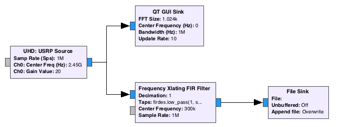
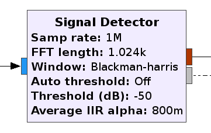
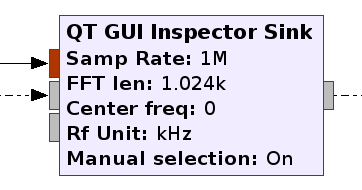
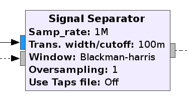
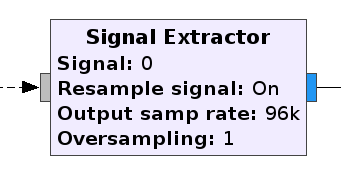
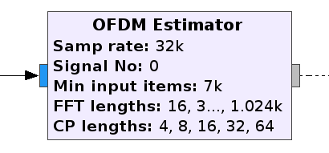
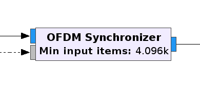
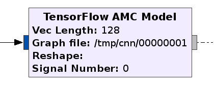
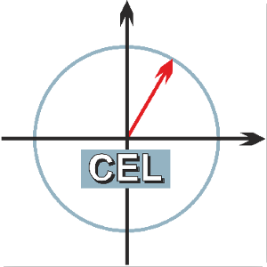

gr-inspector
A Signal Analysis Toolbox for GNU Radio
Motivation of automated signal analysis
- Spectrum Monitoring
- Explore real-world signals
- Easy access for beginners
- Live demodulation
- Batch processing of signals
Tasks of receiving unknown signals
- Detect
- Mix down
- Filter
- Analyse
- Demodulate
- Decrypt
Typical workflow before
- Use GNU Radio to receive signal

- Analyse signal with signal processing tools (Scipy/Inspectrum/MATLAB)
- Estimate necessary parameters for demodulation
- Demodulate with GNU Radio or other tools
Workflow characterized by
- Stop and adjust flowgraph several times
- Rule-of-thumb estimate of parameters
- Real-time analysis hardly possible
- User needs much expertise to perform steps
This is where the inspector comes in!
Signal Detection

- Performs energy detection on one or more signals
- Set threshold or use auto threshold
- Surpress narrow signals (false detections)
- Outputs estimated PSD and map of signal frequencies/bandwidths
Visualisazion

- Plots PSD estimate from signal detector
- Shows signal boundries
- Prints signal properties and analysis results
- Enables manual selection of signals
Separation of signals

- Mixing, Filtering, Decimating
- FIR filter for every detected signal
- Calculates filter taps or uses precalculated JSON file
- Outputs lists of signal parameters and samples
Custom processing of signals

- Picks one signal from separator list
- Passes it as complex stream for most GR blocks
- Resampling possible
OFDM parameter estimation

- Estimation of
- Subcarrier spacing
- Symbol time
- Subcarrier number
- Cyclic prefix length
- Can be fed back to QT GUI Inspector Sink
OFDM Synchronization

- Performs frequency and timing synchronization
Modulation Classification

- Estimates modulation type of single carrier signals
- Developed by Christopher Richardson
-
-----------
< Demotime! >
-----------
\ ^__^
\ (oo)\_______
(__)\ )\/\
||----w |
|| ||
Thank you!
- gr-inspector was a Google Summer of Code project 2016
- Made possible by the great mentors
- Sreeraj Rajendran
- Sebastian Koslowski
- and with support of the Communications Engineering Lab of the KIT Karlsruhe, the GNU Radio community and Google's generous sponsoring
